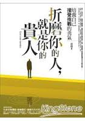

| 貴人 | 別浪費了 | 錯過 | 正能量 | 捨與得 | 成功秘訣 |
| 貴人 |
在人生中歷經磨難時給予你無私幫助和指點迷津的人，都是你生命中貴 人，對你付出了獨特的誠摯、善良、愛護、關懷、憐惜、支持、保護。在茫然的歲月裡自顧不暇無心感恩我們生命中的貴人，甚至有時間抱怨時運不濟或者遇人不淑，卻疏於讓自己從忙碌中沈靜下來，用感恩的心情反省。如果有能力能當別人的貴人，而不是等待貴人出現的人。 九十六年蔡依林獲得金曲獎最佳國語女歌手獎，當時她領獎時說：「要謝謝曾經很不看好我的人，謝謝你們給我很大的打擊，讓我一直很努力。」她現在擁有的成功，都是憑著一股好強的毅力，以及不想讓人失望的心，用時間與汗水累積而來的。 人生充滿著許多的因緣和際遇，每一個因緣的抉擇都可能將自己推向另一個高峰，不要輕忽任何創造可能的機會，或是疏忽可以助人的機會，學習真誠待人，把每一件事都做到完善，對每一個機會都充滿感激，相信我們就是自己生命中最重要的貴人。性格決定一生，態度決定一切，不要躲在自己的世界，幻想著貴人出現，機會是留給準備好的人，當天將降大任於斯人也，你也相對準備好了嗎？ 人生中的七個貴人 欺騙我的人，增長了我的見識 絆倒我的人，強化了我的能力 中傷我的人，砥礪了我的人格 藐視我的人，覺醒了我的自尊 斥責我的人，助長了我的智慧 遺棄我的人，教導了我的獨立 傷害我的人，磨練了我的心志---back |
||||
| 別浪費了 |
今天的你，是不開心的你，因為有人在言語間刺傷了你。 你不喜歡吵架，所以你離開；可是你只是離開了那，卻沒有離開被那人傷害的情境，因此你愈想愈生氣。 愈有氣，你就愈沒有力氣去理會別的事情，許多更該用心去做去想去處理的事件，就在你漫天漫地的心煩意亂之中，被輕忽被漠視被省略了。 因為，你只是一心一意地在生氣在情緒上做文章，這是對自己的浪費，而且是很壞的浪費。畢竟，生氣也是要花力氣的，而且生氣一定傷元氣。 所以，聰明的你，別讓情緒控制了你，當你又要生氣之前，不妨輕聲地提醒自己一句：「別浪費了。」---back |
||||
| 錯過 |
你曾經買了一件很喜歡的衣裳卻捨不得穿，鄭重地供奉在衣櫃裡；許久之 後，當你再看見它的時候，卻發現它已經過時了。所以，你就這樣與它錯過了。 你也曾經買了一塊漂亮的蛋糕卻捨不得吃，鄭重地供奉在冰箱裡；許久之後，當你再看見它的時候，卻發現它已經過期了。所以，你也這樣與它錯過了。 沒有在最喜歡的時候上身的衣裳，沒有在最可口的時候品嘗的蛋糕，就像沒有在最想做的時候去做的事情，都是遺憾。 生命也有保存期限，想做的事該趁早去做。如果你只是把你的心願鄭重地供奉在心裡，卻未曾去實行，那麼唯一的結果，就是與它錯過，一如那件過時的衣裳，一如那塊過期的蛋糕。----back |
||||
| 正能量 | 1.不要過分在乎身邊的人，也不要刻意去在意他人的事 2.活得糊塗，容易幸福;活得清醒，容易煩惱 3.欲成大器，先要大氣 4.愛人是路，朋友是樹 |
||||
| 捨與得 | “得”是一種本事，“捨”是一門學問。 沒有能力的人得不到，沒有悟性的人捨不得。捨得金錢，才能贏得自己， 主宰生活；捨得功名，才能靜下心來，順其自然品味人生。 痛苦是因為捨不得，幸福是因為捨得；憂鬱是因為捨不得，快樂是因為捨得。 捨得之妙，妙在微言大義；捨得之精，精在有捨有得。---back |
||||
|
成功秘訣 |
渤海口有一隻小魚，他下定決心要一路游到山頂於是他逆向而行，這隻小魚泳技精湛，一會兒衝過淺灘，一會兒劃過激流穿過了層層漁網，躲過水鳥的追蹤，好不容易他游到了山頂，可他還來不及喘口氣呢，剎那間，被凍成了冰。 一萬年後，一群登山隊員在山頂上的冰封中發現了他，立刻有人認出了這是產於渤海口的魚。 一位年輕人讚道：「真是一隻勇敢的魚啊！穿越千川萬水來到一個截然不同的環境，了不起」 一位老者卻說：「不！他只有偉大的精神，卻沒有偉大的方向，所以只換來死亡」 成功，除了「努力」以外，更需要「方向」 很多人會選擇不斷地換跑道、換環境、換工作或是拼命地勞碌奔波，有時不妨暫時放慢腳步，想一想：這條路真的是我「想」走的嗎？真的是我「該」走的嗎？ 真的是我「適合」走的嗎？如果走錯，甚至走反了方向，不但到不了目的地，反而會離您的理想與抱負越來越遠，甚至一敗塗地。 就如本的魚一般，有偉大的精神卻走錯了方向，最終換來死亡。人生的路很長，不要急於奔走，應當靜下心來思考，確認方向後才往前出發，並在前行的路途中，不斷的修正方向，才能向正確的成功之路邁進。---back |
||||